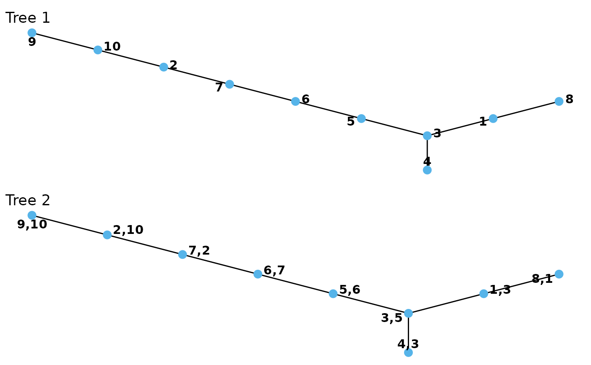
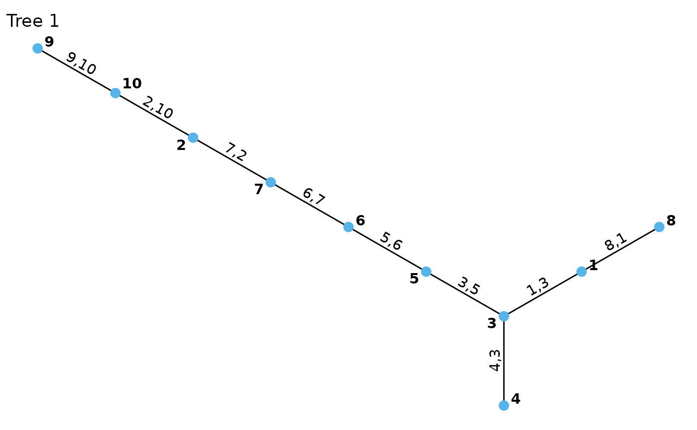

Plotting vinecop_dist and vinecop objects.
plot.vinecop_dist.RdThere are two plotting generics for vinecop_dist objects.
plot.vinecop_dist plots one or all trees of a given R-vine copula
model. Edges can be labeled with information about the corresponding
pair-copula. contour.vinecop_dist produces a matrix of contour plots
(using plot.bicop).
# S3 method for vinecop_dist plot(x, tree = 1, var_names = "ignore", edge_labels = NULL, ...) # S3 method for vinecop plot(x, tree = 1, var_names = "ignore", edge_labels = NULL, ...) # S3 method for vinecop_dist contour(x, tree = "ALL", cex.nums = 1, ...) # S3 method for vinecop contour(x, tree = "ALL", cex.nums = 1, ...)
Arguments
| x |
|
|---|---|
| tree |
|
| var_names | integer; specifies how to make use of variable names:
|
| edge_labels | character; either a vector of edge labels or one of the following:
|
| ... | Unused for |
| cex.nums | numeric; expansion factor for font of the numbers. |
Details
If you want the contour boxes to be perfect squares, the plot height should
be 1.25/length(tree)*(d - min(tree)) times the plot width.
See also
Examples
# set up vine copula model d <- 20 n <- 2e2 u <- matrix(runif(n * d), n, d) vc <- vinecop(u, family = "indep") # plot plot(vc, tree = c(1, 2))# set up another vine copula model pcs <- lapply(1:3, function(j) # pair-copulas in tree j lapply(runif(4 - j), function(cor) bicop_dist("gaussian", 0, cor))) mat <- rvine_matrix_sim(4) vc <- vinecop_dist(pcs, mat) # contour plot contour(vc)